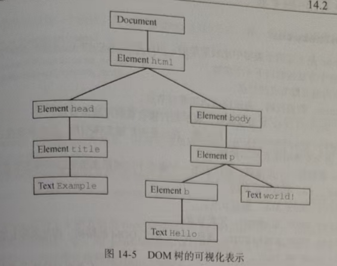
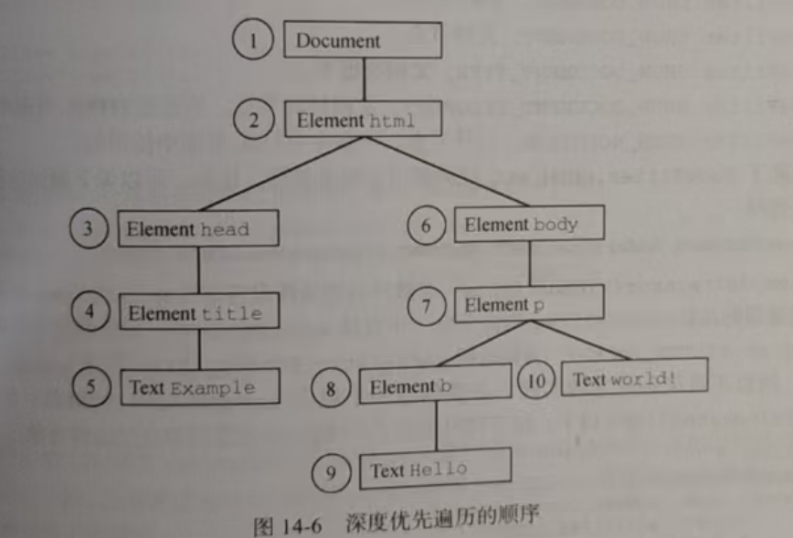

DOM2 Traversal and Range 模块定义了两个类型用于辅助顺序遍历 DOM 结构。 这两个类型 --- NodeIterator 和 TreeWalker --- 从某个起点开始执行对DOM结果的深度优先遍历
如前所述、DOM遍历是对DOM结构的深度优先遍历，至少允许朝两个方向移动(取决于类型) 遍历以给定节点为根 , 不能在DOM中向上超越这个根节点 。来看下面的HTML
这里的两个方向移动是: 从父节点往子节点遍历 和 子节点往父节点遍历 , 平时DOM默认的遍历模式也是 深度优先
Hello world!
<!DOCTYPE html>
<html>
<head>
<title>Example</title>
</head>
<body>
<p><b>Hello</b> world!</p>
</body>
</html>
这段代码构成的 DOM 树如图 14-5 所示
其中的任何节点都可以成为遍历的根节点。比如，假设以<body>元素作为遍历的根节点，那么接下来是<p>元素 , <b>元素和两个文本节点 (都是<body>元素的后代)。(也是DOM的默认深度优先) 但这个遍历不会到达<html>元素 ≪head> 元素, 或者其他不属于 ≪body> 元素子树的元素 。只会找子节点 而以document 为根节点的遍历 , 则可以访问到文档中的所有节点。图14-6展示了以document 为根节点的深度优先遍历。
从document 开始，然后循序移动，第一个节点是document，最后一个节点是包含”wor1d!"的文本节点 (因为他是同胞节点)。 到达文档末尾最后那个文本节点后，遍历会在DOM树中反向回潮 (需要手动触发) 。 此时 , 第一个访问的节点就是包含 "world!" 的文本节点 , 而最后一个是 document 节点本身。 NodeIterator和 TreeWalker 都以这种方式进行遍历
const iterator = document.createNodeIterator / createTreeWalker(
root, // 遍历的根节点（必须）
whatToShow, // 过滤节点类型（可选，默认显示所有节点）
filter, // 自定义过滤器（可选）
entityReferenceExpansion // 已废弃，传 false 即可
);